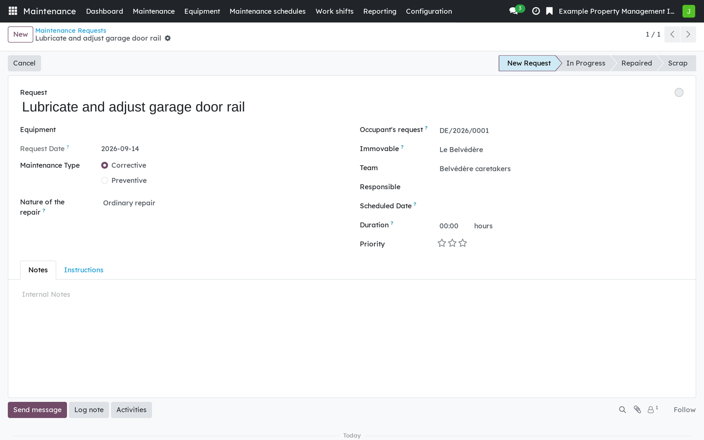
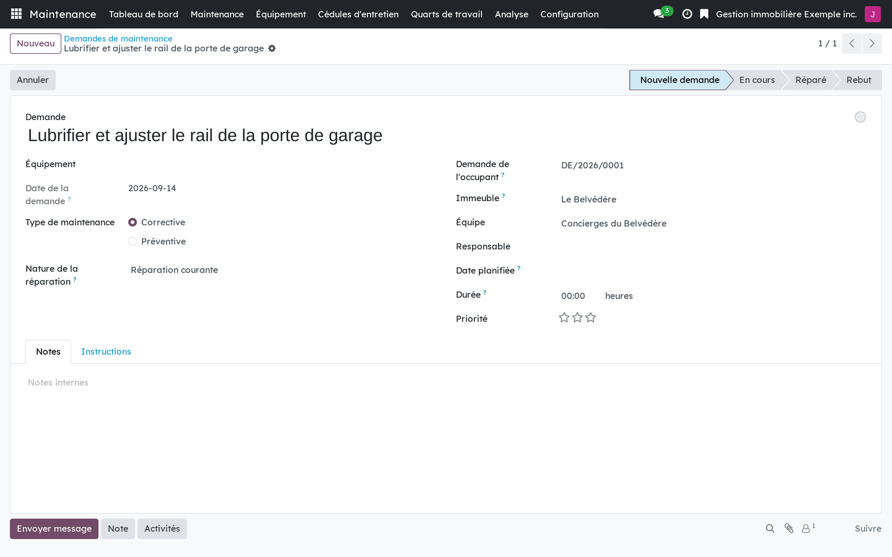

Version française plus bas.
An occupant files a request because the garage door squeaks. Somebody has to go and fix it. Those are two objects, and this bridge connects them. It installs itself when the operations module and the occupant portal are both present.

A work to do, opened from an occupant's request and tied back to it.
Requires Properties: operations (bf_property_operations) and Co-ownership: occupant portal (bf_property_portal). Installs automatically.
Business Source License 1.1. You may use this module in production for your own internal business operations, which include administering immovables that you own or that you are constituted to administer, and letting a person acting on your behalf use your instance for that purpose. Administering immovables for the account of others, or providing the module to third parties as a product or service, whether hosted, managed or resold, requires a separate written agreement with the licensor. Each version converts to LGPL-3.0-or-later on the Change Date stated in the LICENSE file, which sets out the exact terms.
Un occupant dépose une demande parce que la porte du garage grince. Quelqu'un doit aller la réparer. Ce sont deux objets, et ce pont les relie. Il s'installe de lui-même quand le module d'exploitation et le portail de l'occupant sont tous deux présents.

Un travail à exécuter, ouvert depuis la demande d'un occupant et relié à elle.
Exige Immeubles : exploitation (bf_property_operations) et Copropriété : portail de l'occupant (bf_property_portal). S'installe automatiquement.
Business Source License 1.1. Vous pouvez utiliser ce module en production pour vos propres activités internes, ce qui comprend l'administration des immeubles dont vous êtes propriétaire ou que vous êtes constitué pour administrer, et l'usage de votre instance à cette fin par une personne qui agit pour votre compte. Administrer des immeubles pour le compte d'autrui, ou fournir le module à des tiers comme produit ou service, hébergé, géré ou revendu, exige une entente écrite distincte avec le concédant. Chaque version passe sous LGPL-3.0 ou ultérieure à la date de changement inscrite au fichier LICENSE, qui fait foi.